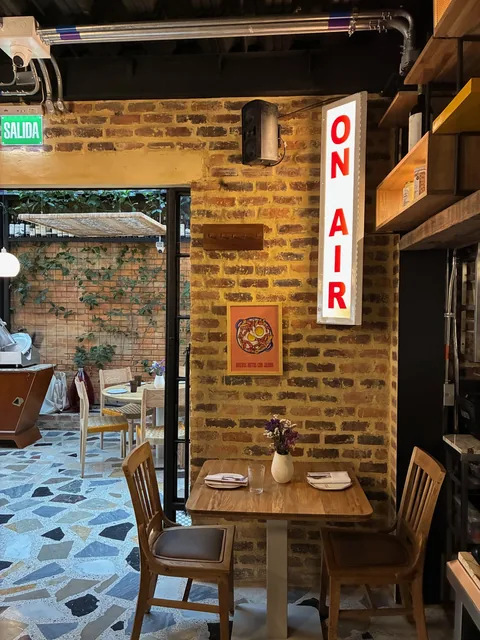
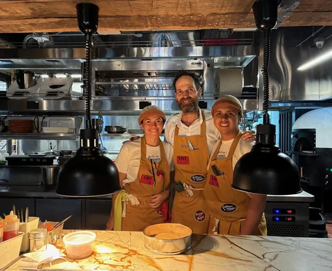

02 / Salón y cocina
La casa
Gallinas y Valientes es el restaurante de Koldo Miranda cerca de El Virrey. Su tortilla vaga rinde homenaje a la de Sacha Hormaechea, en Madrid.
Puerta dibujada; fotos del salón y del pase. Sancho / El Tiempo.


SALA
Salón
Fotografías de Gallinas y Valientes: Sancho / El Tiempo, 6 de noviembre de 2026.
03 / Ubicación
Visita
Cerca del parque El Virrey
Bogotá, Colombia
Por confirmar con el restaurante
- Dirección y acceso
- Entrada exacta y destino de mapa.
- Horarios
- Horarios de sala y cocina.
- Atención y llegada
- Canal oficial y si se requiere reserva.
Esta demo no recibe solicitudes ni reservas.
Gallinas y Valientes · Bogotá
Reservas
El canal oficial de reservas está por confirmar. Esta demo no recibe solicitudes.